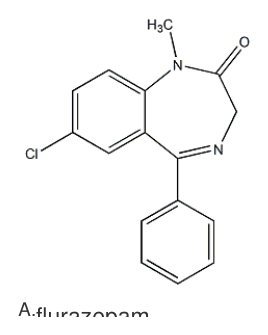
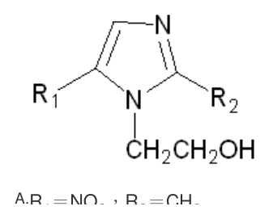
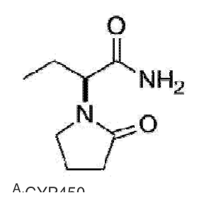

開卷有益 ／
藥師 ／ 藥理學與藥物化學 ／ 106 年第 2 次106 年第 2 次藥師藥理學與藥物化學試題與答案
這一頁是民國 106 年第 2 次藥師藥理學與藥物化學的整份歷屆試題，共 80 題，題目與標準答案出自考選部「國家考試試題及測驗式試題答案」開放資料，其中 73 題附有詳解。以下逐題列出題幹、選項與答案；要計時作答或記錄成績，請用線上練習。
考選部原始場次代碼：106100
線上作答這一科 →
全部 80 題
第 1 題
葡萄糖六磷酸鹽脫氫酶缺陷（glucose-6-phosphate dehydrogenase-deficient）的病人使用下列何種藥物並不 會引起溶血性貧血（hemolytic anemia）之副作用？
（A） ampicillin（B） chloramphenicol（C） p-aminosalicylic acid（D） primaquine答案：（A）
詳解與考點 正解：G6PD 缺陷病人的溶血風險來自藥物或其代謝物造成的氧化壓力，紅血球內缺乏 G6PD 使還原型 glutathione 供應不足，無法對抗氧化損傷而溶血；ampicillin 屬 penicillin 類抗生素，其結構與代謝路徑不會產生顯著氧化壓力，臨床上不被列為 G6PD 缺陷病人之高風險用藥，故選 A。
B：chloramphenicol 具氧化性代謝產物，屬經典會誘發 G6PD 缺陷病人溶血性貧血之藥物之一。
C：p-aminosalicylic acid 同屬具氧化壓力之藥物，於 G6PD 缺陷病人使用有誘發溶血之風險。
D：primaquine 是誘發 G6PD 缺陷病人溶血性貧血最典型、最經典的代表藥物，此藥的溶血風險也是臨床用藥前常規篩檢 G6PD 之主要理由之一。
本題考點：G6PD 缺陷之藥物誘發溶血（drug-induced hemolysis in G6PD deficiency）——判準是藥物或代謝物是否造成顯著氧化壓力，紅血球因還原型 glutathione 不足而無法代償；primaquine 為此類藥物之經典代表，臨床用藥前常規篩檢 G6PD 即為此故。
第 2 題
藥物通過體內某一部分的擴散速率與下列何種因素成反比？
（A） 表面積（B） 通透率係數（C） 濃度差（D） 通過部位的厚度答案：（D）
詳解與考點 正解：本題套用 Fick 擴散定律，擴散速率與表面積、通透率係數及濃度差成正比，與擴散路徑厚度成反比。通過部位越厚，分子要走的距離越長，單位時間內通過的量越少；（D）正確，故選 D。
A：表面積增加會提供更多可同時擴散的通道，速率應上升而非下降。
B：通透率係數越大，表示膜對該分子越容易通過，擴散速率與其成正比。
C：濃度差是擴散的驅動力；濃度梯度越大，淨擴散速率越快。
本題考點：Fick 擴散定律（Fick's law of diffusion）——用速率與 A、P、ΔC 成正比、與厚度 h 成反比來判斷方向；膜厚度——其他條件固定時，厚度增加會拉長擴散距離並降低通量。
第 3 題
下列有關potency與efficacy的敘述，何者最正確？
（A） 一藥物之potency比其efficacy重要（B） potency與藥物的intrinsic activity較有關（C） efficacy與藥物-受體間的親和力較有關（D） efficacy與藥物的intrinsic activity較有關答案：（D）
詳解與考點 正解：efficacy 問的是藥物能達到的最大效應，最直接反映藥物活化受體並產生反應的 intrinsic activity。藥物即使在低濃度就有效，仍可能只能產生較低的最大效應；因此（D）最正確，故選 D。
A：potency 與 efficacy 描述不同面向，不能抽離治療目標後宣稱其中一者必然較重要。
B：potency 主要看達到特定效應所需濃度或劑量，較常與受體親和力、受體數量等因素連結，不是以 intrinsic activity 為主。
C：efficacy 不是主要由藥物－受體親和力決定；親和力可影響 potency，但最大效應仍取決於受體活化後的效應能力。
本題考點：效能（efficacy）——比較 Emax 時看 intrinsic activity，最大效應較高者 efficacy 較高；效價（potency）——比較 EC50 或達效所需劑量，不能把低 EC50 誤當成高 Emax。
第 4 題
有關Tetracyclines類抗生素之敘述，下列何者正確？
（A） 和細菌之50S核醣體結合而抑制其功能（B） 屬於殺菌型抗生素（C） 副作用少，適合用於治療孕婦或幼童之感染（D） 是治療披衣菌（chlamydiae）及立克次體（rickettsiae）感染的首選藥物答案：（D）
詳解與考點 正解：Tetracyclines 抑制細菌蛋白質合成，且對披衣菌與立克次體具有重要臨床活性；在這兩類感染中是首選藥物之一，因此（D）正確，故選 D。
A：Tetracyclines 結合的是細菌 30S 核醣體次單元，阻止 aminoacyl-tRNA 接入，不是結合 50S。
B：此類藥通常為抑菌型抗生素，抑制增殖而非直接造成典型殺菌效果。
C：Tetracyclines 會與鈣結合並沉積於牙齒和骨骼，可能造成牙齒變色與骨骼發育問題，不適合用於孕婦或幼童。
本題考點：四環素類抗生素（tetracyclines）——看到 30S、aminoacyl-tRNA 受阻與抑菌作用時，辨識為 tetracyclines；四環素類禁忌——遇到孕婦或幼童時，因牙齒與骨骼沉積風險優先排除；披衣菌與立克次體感染——需要細胞內活性的抗生素時，tetracyclines 是重要選項。
第 5 題
下列癌症化學治療藥物，何者不屬於抗代謝類（antimetabolites）？
（A） 6-Mercaptopurine（B） 5-Fluorouracil（C） Pemetrexed（D） Darcarbazine答案：（D）
詳解與考點 正解：分類的關鍵在藥物是否以核酸或葉酸代謝為標靶；（D）所列 triazene 類藥物屬烷化劑，經活性甲基化中間體損傷 DNA，不屬 antimetabolites，故選 D。
A：（A）6-Mercaptopurine 為 purine analog，會干擾嘌呤核苷酸合成，屬抗代謝類，故非答案。
B：（B）5-Fluorouracil 為 pyrimidine analog，主要抑制 thymidylate synthase 而阻斷 DNA 合成，屬抗代謝類，故非答案。
C：（C）Pemetrexed 為 antifolate，會干擾葉酸依賴的核苷酸合成反應，仍歸於抗代謝類，故非答案。
本題考點：抗代謝藥（antimetabolites）——看到核酸鹼基或葉酸類似物時，先判斷其是否藉由阻斷核苷酸合成發揮作用；烷化劑（alkylating agents）——若藥物以共價修飾或交聯 DNA 為主，應與抗代謝藥分開分類。
第 6 題
下列抑制細胞壁合成的抗生素中，何者經由抑制transpeptidase所催化之peptidoglycan橫向連結（cross- linking）？
（A） Cycloserine（B） Teicoplanin（C） Aztreonam（D） Bacitracin答案：（C）
詳解與考點 正解：題幹指定的是 peptidoglycan 橫向連結所需的 transpeptidase；（C）Aztreonam 為 monobactam β-lactam，會結合 penicillin-binding protein 並抑制其 transpeptidase 活性，故選 C。
A：（A）Cycloserine 抑制 alanine racemase 與 D-Ala-D-Ala ligase，使前驅物無法形成，作用位置早於橫向連結，故非答案。
B：（B）Teicoplanin 結合肽聚醣前驅物末端的 D-Ala-D-Ala，藉由阻礙底物利用而抑制細胞壁合成，並非直接抑制 transpeptidase。
D：（D）Bacitracin 阻斷 bactoprenol 的去磷酸化與再循環，使細胞壁前驅物無法穿越細胞膜，作用位置不是 transpeptidase，故非答案。
本題考點：β-lactam 類抗生素（β-lactam antibiotics）——題目問肽聚醣 cross-linking 時，找與 penicillin-binding protein/transpeptidase 結合的藥物；細胞壁合成步驟（peptidoglycan synthesis）——前驅物形成、跨膜運送與橫向連結是不同靶點，須依酵素或載體名稱分辨。
第 7 題
下列有關etoposide之敘述，何者錯誤？
（A） 是一種podophyllotoxin（B） 會引起禿頭的副作用但是可逆性（C） 主要用於治療睪丸癌（D） 其毒性與血液中的白蛋白的量大小無關答案：（D）
詳解與考點 正解：本題以 etoposide 的蛋白結合特性判斷毒性；（D）將毒性說成與血中 albumin 無關並不正確，albumin 降低時游離 etoposide 比例可增加，血液學毒性風險也會上升，故選 D。
A：（A）Etoposide 為 podophyllotoxin 衍生物，屬其重要的半合成抗腫瘤藥物，敘述正確，故非答案。
B：（B）Etoposide 可造成禿頭，但停藥後毛髮通常可再生；可逆性禿頭是其常見毒性之一，敘述正確，故非答案。
C：（C）Etoposide 是治療睪丸癌常用的合併化學治療藥物之一，敘述正確，故非答案。
本題考點：Etoposide（etoposide）——辨識其為 podophyllotoxin 衍生物且主要抑制 topoisomerase II；蛋白結合與游離藥物（protein binding）——高度蛋白結合藥物遇到 albumin 降低時，要留意游離濃度與毒性可能上升。
第 8 題
下列有關Pyrazinamide的敘述，何者錯誤？
（A） 它對肺結核的活性，在pH值偏鹼性的環境下抑制作用較強（B） 它本身是Prodrug，其活性型是Pyrazinoic acid（C） 主要副作用是肝毒性（D） 高尿酸症的病人可能會誘發急性痛風關節炎答案：（A）
詳解與考點 正解：Pyrazinamide 的活性受環境酸鹼值影響；（A）說它在偏鹼環境抑制力較強，方向剛好相反，該藥在酸性環境下較能發揮對結核菌的作用，故選 A。
B：（B）Pyrazinamide 本身為 prodrug，經轉化成 pyrazinoic acid 後才形成主要活性型，敘述正確，故非答案。
C：（C）肝毒性是 Pyrazinamide 治療時需注意的重要不良反應，敘述正確，故非答案。
D：（D）Pyrazinamide 及其代謝物會降低尿酸排泄，造成高尿酸血症並可能誘發急性痛風關節炎，敘述正確，故非答案。
本題考點：Pyrazinamide（pyrazinamide）——看到結核菌所處酸性環境時，應連結其較佳活性；前驅藥活化（prodrug activation）——題目問活性成分時，要區分母藥與轉化後的 pyrazinoic acid；高尿酸血症（hyperuricemia）——使用會降低尿酸排泄的藥物時，須連結痛風惡化風險。
第 9 題
下列何者屬於第三代Cephalosporin？
（A） Cefotaxime（B） Cefadroxil（C） Cefoxitin（D） Cefotetan答案：（A）
詳解與考點 正解：Cephalosporin 世代要依個別藥物分類，不可只看字首；（A）Cefotaxime 屬第三代 cephalosporin，故選 A。
B：（B）Cefadroxil 屬第一代 cephalosporin，以較偏向革蘭氏陽性菌的抗菌譜為特徵，故非答案。
C、D：（C）Cefoxitin 與（D）Cefotetan 都是 cephamycin 類，通常歸入第二代 cephalosporin；兩者雖對部分厭氧菌較有活性，世代仍不是第三代。
本題考點：頭孢菌素世代（cephalosporin generations）——題目列藥名時，應以已知代表藥對照世代，不以名稱相似度推定；Cephamycins（cephamycins）——遇到 Cefoxitin 或 Cefotetan 時，辨識其常歸於第二代且兼具較佳厭氧菌涵蓋。
第 10 題
下列何種藥物之適應症包括急性／慢性骨髓性白血病以及鐮刀型貧血症？
（A） Hydroxyurea（B） Methotrexate（C） Daunorubicin（D） Cytarabine答案：（A）
詳解與考點 正解：同時涵蓋骨髓性白血病與鐮刀型貧血症是辨識線索；（A）Hydroxyurea 抑制 ribonucleotide reductase，可用於骨髓性白血病的細胞增殖控制，並可提高 fetal hemoglobin 以減少鐮刀化，故選 A。
B：（B）Methotrexate 為 antifolate，可用於多種惡性腫瘤與免疫相關疾病，但不是鐮刀型貧血症的典型治療藥物，故非答案。
C：（C）Daunorubicin 為 anthracycline，主要用於急性白血病等惡性腫瘤治療，不具提高 fetal hemoglobin 的用途，故非答案。
D：（D）Cytarabine 為 pyrimidine analog，常用於急性骨髓性白血病，卻不治療鐮刀型貧血症，故非答案。
本題考點：Hydroxyurea（hydroxyurea）——遇到骨髓性白血病合併鐮刀型貧血症的適應症組合時，優先辨識此藥；Ribonucleotide reductase inhibition——阻斷 deoxyribonucleotide 生成時，會抑制 DNA 合成；Fetal hemoglobin（HbF）——鐮刀型貧血症的藥物判讀要看是否能提高 HbF、降低紅血球鐮刀化。
第 11 題
下列有關Aspirin之敘述，何者錯誤？
（A） 不可逆地抑制血小板cyclooxygenase-1活性（B） 抑制cyclooxygenase主要來自其水解產物salicylate之作用（C） 抑制血小板凝集與抑制thromboxane A2之形成有關（D） 可用於預防心肌梗塞答案：（B）
詳解與考點 正解：判準是 Aspirin 的不可逆 cyclooxygenase 抑制來自原型藥的 acetylation；（B）將主要作用歸因於水解產物 salicylate 並不正確，故選 B。
A：（A）Aspirin 會不可逆乙醯化血小板 cyclooxygenase-1；血小板無法重新合成該酵素，敘述正確，故非答案。
C：（C）抑制血小板凝集與 thromboxane A2 形成減少有關，這正是低劑量 Aspirin 的抗血小板基礎，故非答案。
D：（D）Aspirin 可用於心肌梗塞的二級預防或高風險族群的抗血小板治療，敘述正確，故非答案。
本題考點：Aspirin（acetylsalicylic acid）——判斷不可逆抑制時，鎖定原型藥對 cyclooxygenase 的乙醯化，而非其 salicylate 水解產物；Thromboxane A2（TXA2）——題目連到血小板凝集時，辨識 COX-1 抑制會降低 TXA2 形成。
第 12 題
下列何者為thioamides減少甲狀腺素分泌的機轉？
（A） 抑制碘離子的吸收（B） 抑制甲狀腺素的合成（C） 抑制甲狀腺球蛋白的合成（D） 抑制T3的去碘化作用答案：（B）
詳解與考點 正解：Thioamides 降低甲狀腺素的主要步驟在合成而非釋放；（B）抑制 thyroid peroxidase 所參與的碘化與偶聯反應，會減少甲狀腺素合成，故選 B。
A：（A）碘離子吸收由 sodium-iodide symporter 負責，抑制此步驟是過氯酸鹽類的典型機轉，不是 thioamides 的主要作用。
C：（C）Thioamides 不以抑制 thyroglobulin 蛋白合成作為主要降甲狀腺素機轉，故非答案。
D：（D）Propylthiouracil 可抑制周邊 T4 轉為 T3，但這不是抑制甲狀腺內荷爾蒙合成的共同主要機轉；題目所述抑制 T3 去碘化也不符合該判準。
本題考點：Thioamides（thioamides）——問甲狀腺內主要作用時，鎖定 thyroid peroxidase 的碘化與偶聯反應；周邊轉換抑制（peripheral T4-to-T3 conversion）——只有部分 thioamides 具此附加作用，不能取代共同的合成抑制機轉。
第 13 題
下列何者為Dopamine D2受體致效劑，可用來治療高泌乳素血症（Hyperprolactinemia）？
（A） Cabergoline（B） Dobutamine（C） Fenoldopam（D） Haloperidol答案：（A）
詳解與考點 正解：高泌乳素血症需要以 dopamine D2 受體致效抑制 prolactin 分泌；（A）Cabergoline 是長效 dopamine D2 agonist，可降低泌乳素，故選 A。
B：（B）Dobutamine 主要刺激 β1 受體以增加心肌收縮力，並非 dopamine D2 agonist，故非答案。
C：（C）Fenoldopam 為 dopamine D1 agonist，主要造成腎血管與周邊血管擴張，受體亞型與題目不同，故非答案。
D：（D）Haloperidol 為 dopamine D2 antagonist，反而可能因解除 dopamine 對泌乳素的抑制而造成高泌乳素血症，故非答案。
本題考點：泌乳素調節（prolactin regulation）——遇到高泌乳素血症時，找能增加 dopamine D2 訊號的藥物；Dopamine receptor subtypes——D1 偏向血管與腎臟作用，D2 才是泌乳素分泌判讀的關鍵受體。
第 14 題
下列何者並非Corticosterone之作用？
（A） 產生精神異常（B） 減少發炎之現象（C） 抑制免疫作用（D） 使腦下垂體釋放生長激素及甲狀腺促進激素答案：（D）
詳解與考點 正解：Corticosterone 的糖皮質素樣作用會抑制而非促進腦下垂體部分荷爾蒙分泌；（D）說它使腦下垂體釋放生長激素與甲狀腺促進激素並不正確，故選 D。
A：（A）糖皮質素過量可影響中樞神經系統而出現情緒或精神症狀，敘述正確，故非答案。
B：（B）減少發炎現象是糖皮質素抑制發炎介質與免疫細胞活性的典型作用，敘述正確，故非答案。
C：（C）糖皮質素可抑制免疫反應，這也是其治療與不良反應都須留意的作用，故非答案。
本題考點：糖皮質素作用（glucocorticoid effects）——判斷全身作用時，連結抗發炎、免疫抑制與中樞精神症狀；下視丘—腦下垂體回饋（hypothalamic-pituitary feedback）——遇到糖皮質素時，以負回饋抑制為方向，不把它判成促進腦下垂體荷爾蒙釋放。
第 15 題
下列抗高血壓藥物，何者較少產生直立性低血壓的副作用？
（A） Prazosin（B） Hydrochlorothiazide（C） Hydralazine（D） Methyldopa答案：（B）
詳解與考點 正解：比較直立性低血壓時，要看藥物是否直接削弱站立時的交感血管收縮反應；（B）Hydrochlorothiazide 雖可因利尿造成容量不足，但不直接阻斷 α1 受體或中樞交感輸出，通常較少出現此特徵性副作用，故選 B。
A：（A）Prazosin 阻斷血管 α1 受體，站立時無法充分血管收縮，首劑與直立性低血壓是最強的誘答辨析重點，故非答案。
C：（C）Hydralazine 直接擴張小動脈，血壓下降可伴隨頭暈與明顯的反射性心跳加快及液體滯留，臨床上仍可能出現姿勢性症狀；thiazide 則只在利尿造成容量不足時才間接引起，常規劑量下為四者中最少，故（C）不是題目所問較少造成直立性低血壓者。
D：（D）Methyldopa 降低中樞交感神經輸出，可能造成鎮靜與姿勢性低血壓，故非答案。
本題考點：直立性低血壓（orthostatic hypotension）——判斷降壓藥時，先看其是否阻斷 α1 介導的姿勢性血管收縮或抑制交感輸出；Thiazide diuretics——利尿造成的低血壓要與 α1 阻斷劑的特徵性姿勢性低血壓分開判讀。
第 16 題
下列何者是治療大腦水腫昏迷的病人之首選藥物？
（A） Mannitol（B） Acetazolamide（C） Amiloride（D） Ethacrynic acid答案：（A）
詳解與考點 正解：大腦水腫合併昏迷需要迅速降低腦內水分與顱內壓；（A）Mannitol 會提高血漿滲透壓，把水由腦組織移向血管內，故選 A。
B：（B）Acetazolamide 可減少腦脊髓液生成，但不足以取代急性腦水腫昏迷時的滲透治療，故非答案。
C：（C）Amiloride 為保鉀利尿劑，利尿效力較弱，不能快速建立降低腦水腫所需的滲透壓梯度，故非答案。
D：（D）Ethacrynic acid 為 loop diuretic，雖能利尿，卻不像 Mannitol 直接以滲透作用將腦組織水分移出，故非答案。
本題考點：Mannitol（mannitol）——急性腦水腫題要找能提高血漿滲透壓、降低顱內壓的滲透利尿劑；滲透利尿（osmotic diuresis）——分辨時看藥物是否先在血管內形成滲透梯度，而非只看是否能增加尿量。
第 17 題
那一種降壓藥物投與後會引起鎮靜或嗜睡之副作用？
（A） Clonidine（B） Verapamil（C） Guanethidine（D） Prazosin答案：（A）
詳解與考點 正解：鎮靜或嗜睡提示中樞交感神經抑制；（A）Clonidine 刺激中樞 α2 受體、降低交感神經輸出，因此可引起鎮靜與嗜睡，故選 A。
B：（B）Verapamil 為 L-type calcium channel blocker，較具代表性的反應是心跳變慢、便祕或負性肌力作用，不是中樞鎮靜。
C：（C）Guanethidine 阻斷周邊交感神經末梢的神經傳遞，較需注意姿勢性低血壓等周邊作用，並非典型的鎮靜藥物。
D：（D）Prazosin 為 α1 blocker，常見辨識線索是首劑直立性低血壓，而非鎮靜或嗜睡，故非答案。
本題考點：Clonidine（clonidine）——降壓藥合併鎮靜、口乾或停藥反彈時，優先連結中樞 α2 agonist；交感神經抑制（sympatholytic action）——分辨中樞與周邊作用時，看藥物是否直接降低腦幹交感神經輸出。
第 18 題
那一種用於Supraventricular arrhythmia治療藥物最有可能誘發Atrial fibrillation之副作用？
（A） Sotalol（B） Propranolol（C） Adenosine（D） Verapamil答案：（C）
詳解與考點 正解：治療 supraventricular arrhythmia 時，Adenosine 可在短暫房室結阻斷後誘發 atrial fibrillation；（C）Adenosine 最符合此不良反應線索，故選 C。
A：（A）Sotalol 兼具 β-blockade 與 potassium channel blockade，較具代表性的風險是 QT 延長與 torsades de pointes，不是誘發 atrial fibrillation。
B：（B）Propranolol 以 β-blockade 降低交感刺激並減慢房室結傳導，通常用於心率控制，典型作用不是誘發 atrial fibrillation。
D：（D）Verapamil 阻斷 L-type calcium channel、減慢房室結傳導，適用於部分上心室心律不整的心率控制，並非此題所指最可能誘發 atrial fibrillation 的藥物。
本題考點：Adenosine（adenosine）——遇到短效房室結阻斷藥時，辨識其可終止部分 AV node-dependent tachycardia，也可能誘發 atrial fibrillation；抗心律不整藥不良反應（antiarrhythmic adverse effects）——選項都能影響心律時，要用各藥的特徵性不良反應而非治療用途區分。
第 19 題
若病人因血鈉濃度降低而有生命危險時，那一種利尿劑最適合與高鈉溶液併用以為急救使用？
（A） Furosemide（B） Mannitol（C） Amiloride（D） Acetazolamide答案：（A）
詳解與考點 正解：嚴重低鈉血症併容量過多時，以高鈉溶液補鈉、再用 loop diuretic 排除多餘的自由水，可提升血鈉而不加重水負荷，過程中須連續監測血鈉、避免矯正過快。（A）Furosemide 抑制厚上行支的 Na-K-2Cl cotransporter，可增加鈉與水排出，與高鈉溶液併用時有助避免水負荷，故選 A。
B：（B）Mannitol 會造成滲透性水分移動，並非處理低鈉血症時與高鈉溶液併用以利排出多餘水分的典型選擇，故非答案。
C：（C）Amiloride 為保鉀利尿劑，利尿效力有限，不能作為此急救情境所需的快速排水藥物，故非答案。
D：（D）Acetazolamide 主要引起 bicarbonaturia，適應症與利尿特性都不符合本題的低鈉血症急救併用判準，故非答案。
本題考點：Loop diuretics（loop diuretics）——題目要快速增加鈉與水排出時，優先辨識抑制 Na-K-2Cl cotransporter 的藥物；低鈉血症處置（hyponatremia management）——高張鈉溶液與利尿劑是否併用須依容量狀態、症狀與連續血鈉監測判斷，不能只依單一藥理機轉套用。
第 20 題
那一種利尿劑較不會增加腎血流量？
（A） Furosemide（B） Trichlormethiazide（C） Bumetanide（D） Ethacrynic acid答案：（B）
詳解與考點 正解：腎血流量增加是 loop diuretic 的特徵性腎血流動力學作用之一；（B）Trichlormethiazide 為 thiazide 類，不以增加腎血流量為主要作用，故選 B。
A：（A）Furosemide 為 loop diuretic，可藉腎臟 prostaglandin 相關作用增加腎血流量，故非答案。
C：（C）Bumetanide 同為 loop diuretic，作用於 thick ascending limb，腎血流動力學特性與 thiazide 類不同，故非答案。
D：（D）Ethacrynic acid 也是 loop diuretic，雖結構不同於 sulfonamide 類 loop diuretic，仍不是本題所問較不增加腎血流量者，故非答案。
本題考點：Loop diuretics（loop diuretics）——看到 furosemide、bumetanide 或 ethacrynic acid 時，先連結 thick ascending limb 與腎血流增加；Thiazide diuretics——遇到 trichlormethiazide 時，辨識其作用於 distal convoluted tubule，不套用 loop diuretic 的腎血流特性。
第 21 題
病人患有Atrial flutter等心房心律不整，下列那一種藥物最不易使此不正常心律恢復為正常的竇房結心律 （Sinus rhythm）？
（A） Quinidine（B） Procainamide（C） Sotalol（D） Lidocaine答案：（D）
詳解與考點 正解：Atrial flutter 的節律轉復較依賴能作用於心房組織的 class IA 或 class III 藥物；（D）Lidocaine 為 class IB，對心房心律不整效力較弱，最不易使 atrial flutter 恢復 sinus rhythm，故選 D。
A：（A）Quinidine 為 class IA，可延長有效不應期並作用於心房組織，能用於部分心房性心律不整的轉復，故非答案。
B：（B）Procainamide 同為 class IA，對心房組織具鈉離子通道阻斷與延長不應期作用，較符合節律轉復需求，故非答案。
C：（C）Sotalol 兼具 class III potassium channel blockade 與 β-blockade，可用於部分心房性心律不整的節律控制，故非答案。
本題考點：Class IB antiarrhythmics——遇到 Lidocaine 時，優先連結其偏向心室組織的作用，不把它當成轉復 atrial flutter 的首選；心房節律轉復（atrial rhythm conversion）——題目問恢復 sinus rhythm 時，辨識能延長心房不應期或有效抑制心房傳導的藥物。
第 22 題
下列那一種降血壓藥物會引起關節痛、肌肉酸痛、皮膚疹、發燒等類似紅斑性狼瘡之副作用？
（A） Hydralazine（B） Clonidine（C） Enalapril（D） Losartan答案：（A）
詳解與考點 正解：關節痛、肌肉酸痛、皮疹與發燒組合指向 drug-induced lupus；（A）Hydralazine 是可引起類紅斑性狼瘡症候群的典型降壓藥，故選 A。
B：（B）Clonidine 的辨識重點是中樞 α2 agonist 所致口乾、鎮靜與停藥反彈，不是 drug-induced lupus，故非答案。
C：（C）Enalapril 為 ACE inhibitor，較常以咳嗽、血管性水腫與高血鉀作為不良反應辨識，不是類紅斑性狼瘡症候群。
D：（D）Losartan 為 angiotensin II receptor blocker，較需注意高血鉀與懷孕禁忌等問題，並非此題所指的 lupus-like adverse effect。
本題考點：Hydralazine（hydralazine）——降壓藥合併發燒、關節肌肉痛與皮疹時，優先連結 drug-induced lupus；藥物誘發性狼瘡（drug-induced lupus）——辨識時看症候群組合與典型藥物，不把 ACE inhibitor 或 ARB 的常見不良反應混入。
第 23 題
下列何種α1-blockers在產生降壓作用時會引起最明顯的反射性心跳頻率增加？
（A） Terazosin（B） Prazosin（C） Doxazosin（D） Phentolamine答案：（D）
詳解與考點 正解：反射性心跳加快最明顯時，要找同時失去 α2 受體負回饋的 α 阻斷藥；（D）Phentolamine 非選擇性阻斷 α1 與 α2 受體，α2 阻斷會增加 norepinephrine 釋放，因此心跳加快較明顯，故選 D。
A、B、C：（A）Terazosin、（B）Prazosin 與（C）Doxazosin 都以選擇性 α1 blockade 為主，仍保留突觸前 α2 對 norepinephrine 釋放的負回饋；分辨關鍵在是否連 α2 一併阻斷，故三者的反射性心跳加快通常較不明顯。
本題考點：α 受體阻斷劑（α-adrenergic antagonists）——比較心跳反射時，先區分選擇性 α1 blockade 與非選擇性 α blockade；突觸前 α2 受體（presynaptic α2 receptor）——若 α2 負回饋被阻斷，norepinephrine 釋放增加，會放大反射性心跳加快。
第 24 題
下列有關抗心律不整藥物的敘述何者錯誤？
（A） Lidocaine可抑制鈉離子管道（B） Sotalol可抑制鉀離子管道（C） Procainamide可抑制鈣離子管道（D） Flecainide可抑制鈣離子管道本題送分，無標準答案
詳解與考點 本題經考選部公告一律給分。本題問何者錯誤，(C)Procainamide屬第IA類抗心律不整藥物，主要作用機轉為抑制鈉離子管道而非鈣離子管道，故(C)「可抑制鈣離子管道」之敘述應屬錯誤；然(D)Flecainide屬第IC類藥物，同樣主要抑制鈉離子管道而非鈣離子管道，「可抑制鈣離子管道」之敘述亦屬錯誤，兩者同時成立使本題出現兩個可判為錯誤之選項，無法唯一擇一。(A)Lidocaine抑制鈉離子管道、(B)Sotalol抑制鉀離子管道皆為正確敘述，可排除。作答以現行藥理學抗心律不整藥物分類為準。
第 25 題
臨床上以靜脈注射小劑量多巴胺增加腎臟的灌流，可改善少尿症，多巴胺最有可能透過那一型受體產生腎血 管的舒張作用？
（A） D1（B） D3（C） β1（D） α答案：（A）
詳解與考點 正解：低劑量 dopamine 增加腎臟灌流時，關鍵是腎血管平滑肌的 D1 受體活化。D1 受體經由 Gs 增加 cAMP，使血管平滑肌舒張，因此可增加腎血流，故選 A。
B：D3 受體主要分布於中樞神經系統並參與獎賞與情緒調節，不是低劑量 dopamine 造成腎血管舒張的主要受體。
C：β1 受體活化主要增加心跳與心肌收縮力，是 dopamine 劑量提高後較顯著的心臟作用，不能解釋題目所述的腎血管舒張。
D：α 受體活化會使血管收縮；在較高劑量 dopamine 的作用下，這反而會提高周邊血管阻力，方向與腎血管舒張相反。
本題考點：D1 受體（dopamine D1 receptor）——看到低劑量 dopamine 與腎血流增加時，先連結血管平滑肌 cAMP 上升與舒張；劑量依賴性受體作用（dose-dependent receptor activation）——同一藥物可隨劑量由 D1、β1 到 α 作用依序顯現，須用題幹的生理效應回推受體。
第 26 題
下述那一種藥物可以作為有機磷中毒或insecticide、nerve gases中毒之解毒劑，其作用機轉是活化 phoshorylated acetylcholinesterase？
（A） Rivastigmine（B） Pravastatin（C） Pralidoxime（D） Physostigmine答案：（C）
詳解與考點 正解：有機磷會使 acetylcholinesterase 磷酸化而失活，pralidoxime 的 oxime 基可在酵素老化前切除磷酸基並再活化酵素，因此是題目所問的解毒機轉，故選 C。
A：rivastigmine 是可逆性 cholinesterase 抑制劑，用於增加膽鹼性傳遞；有機磷中毒已是 acetylcholine 過多，不能用它再抑制酵素。
B：pravastatin 為 HMG-CoA reductase 抑制劑，作用在膽固醇生成，與磷酸化 acetylcholinesterase 的再活化無關。
D：physostigmine 也是可逆性 acetylcholinesterase 抑制劑，會增加 synaptic acetylcholine；其作用方向與解除有機磷造成的酵素失活不同。
本題考點：有機磷中毒（organophosphate poisoning）——面對膽鹼性危象時，要區分阻斷 muscarinic 症狀與恢復 acetylcholinesterase 活性的藥物；酵素老化（enzyme aging）——oxime 類須在磷酸化酵素老化前使用，才能有效再活化酵素。
第 27 題
下列藥物何者最易引起metabolic alkalosis？
（A） Sodium bicarbonate（B） Misoprostol（C） Magnesium hydroxide（D） Sorbitol答案：（A）
詳解與考點 正解：sodium bicarbonate 可被吸收並直接增加體內 bicarbonate 負荷；當腎臟無法完全排出多餘鹼時，最容易造成 metabolic alkalosis，故選 A。
B：misoprostol 是 PGE1 類似物，主要用於胃黏膜保護及相關適應症，並非提供可吸收鹼負荷的制酸劑。
C：magnesium hydroxide 雖是制酸劑，但其腸道吸收有限，較常見的問題是滲透性腹瀉；與可吸收 sodium bicarbonate 相比，較不易造成全身性代謝性鹼中毒。
D：sorbitol 是滲透性瀉劑，會使腸道保留水分而促進排便，沒有直接增加 bicarbonate 的作用。
本題考點：代謝性鹼中毒（metabolic alkalosis）——制酸劑是否會造成全身酸鹼改變，先判斷其鹼性成分能否大量吸收；可吸收性制酸劑（systemic antacid）——含 bicarbonate 的製劑會增加體內鹼負荷，與局部作用且吸收少的制酸劑須分開判斷。
第 28 題
下列何者不是Proton pump抑制劑的特性？
（A） 主要經由胃部吸收（B） 大部分以prodrug型式使用（C） 脂溶性高（D） 屬弱鹼性藥物答案：（A）
詳解與考點 正解：Proton pump inhibitor 多為酸不穩定的弱鹼性 prodrug，通常以腸溶方式避開胃酸，主要在小腸吸收後再集中於胃壁細胞酸性小管中活化；因此「主要經由胃部吸收」不是其特性，故選 A。
B：Proton pump inhibitor 大多以 prodrug 型式給藥，進入胃壁細胞的酸性環境後才轉為可與 H+/K+-ATPase 共價結合的活性形式，這是正確敘述，故非答案。
C：這類藥須穿過細胞膜並進入胃壁細胞，因此具有足以進行膜通透的脂溶性，這是正確敘述，故非答案。
D：Proton pump inhibitor 屬弱鹼，會在強酸性分泌小管內被質子化並滯留，這是正確敘述，故非答案。
本題考點：質子幫浦抑制劑（proton pump inhibitor）——遇到吸收部位問題時，先分清腸溶保護下的腸道吸收與藥物在胃壁細胞內的作用位置；酸活化前驅藥（acid-activated prodrug）——弱鹼性 prodrug 在酸性小管累積後活化，才能不可逆抑制 H+/K+-ATPase。
第 29 題
下列何者不是Aspirin的作用？
（A） 損害腎臟自我調控的功能（B） 鎮痛解熱（C） 減少出血（D） 減少prostaglandin的合成答案：（C）
詳解與考點 正解：aspirin 不可逆抑制血小板 COX-1，減少 thromboxane A2 生成與血小板凝集，因此會延長出血傾向而不是減少出血；（C）不是 aspirin 的作用，故選 C。
A：aspirin 抑制 prostaglandin 生成後，腎臟入球小動脈擴張的代償作用會減弱，可能損害腎血流自我調控，這是其不良作用之一，故非答案。
B：抑制 COX 後可降低與疼痛及發燒相關的 prostaglandin，故 aspirin 具有鎮痛與解熱作用，這是正確敘述，故非答案。
D：aspirin 乙醯化並抑制 COX，會減少 prostaglandin 合成；這正是其多數藥理效應的上游機轉，故非答案。
本題考點：aspirin 的抗血小板作用（antiplatelet effect of aspirin）——判斷出血方向時，看血小板 thromboxane A2 是否下降，下降代表凝集變差而出血風險上升；COX 抑制（cyclooxygenase inhibition）——鎮痛、解熱、腎血流調節與血小板效應都可由 prostaglandin 或 thromboxane 減少串連判斷。
第 30 題
用於治療高血壓之藥物Aliskiren是屬於下列何類作用之藥物？
（A） angiotensin receptor blocker（B） natriuretic peptide（C） renin inhibitor（D） vasopeptidase inhibitor答案：（C）
詳解與考點 正解：aliskiren 直接抑制 renin，阻斷 angiotensinogen 轉成 angiotensin I 的起始步驟，因此分類為 renin inhibitor，故選 C。
A：angiotensin receptor blocker 阻斷的是 angiotensin II 的 AT1 受體，作用位置在 renin 下游；aliskiren 並非受體拮抗劑。
B：natriuretic peptide 透過利鈉、血管舒張等作用降低血壓，與直接抑制 renin 的機轉不同。
D：vasopeptidase inhibitor 同時影響血管收縮胜肽的代謝途徑，例如 ACE 與 neprilysin；aliskiren 只針對 renin 的酵素活性。
本題考點：腎素－血管張力素系統（renin-angiotensin system）——依阻斷位置由上游到下游區分 renin inhibitor、ACE inhibitor 與 angiotensin receptor blocker；renin 抑制（renin inhibition）——看到 aliskiren 時，直接連結 angiotensinogen 轉成 angiotensin I 的第一個酵素步驟。
第 31 題
有關類風濕性關節炎（rheumatoid arthritis; RA）之用藥，下列敘述何者錯誤？
（A） A77-1726為 leflunomide之活性代謝產物（B） infliximab與 rituximab皆為TNF-α阻斷劑（C） methotrexate可用於治療 RA（D） 6-thioguanine為 azathioprine之活性代謝產物答案：（B）
詳解與考點 正解：infliximab 為 TNF-α 阻斷劑，但 rituximab 的標的是 B 細胞表面的 CD20，藉 B 細胞耗竭調節類風濕性關節炎；兩者治療目標不同，所以「皆為 TNF-α 阻斷劑」錯誤，故選 B。
A：A77-1726 是 leflunomide 的活性代謝產物，負責抑制嘧啶新生合成並產生免疫調節作用，這是正確敘述，故非答案。
C：methotrexate 是類風濕性關節炎常用的 disease-modifying antirheumatic drug，可作為疾病控制的基礎藥物，這是正確敘述，故非答案。
D：azathioprine 經代謝後形成具免疫抑制活性的 6-thioguanine 核苷酸相關代謝物，題述的活性代謝方向正確，故非答案。
本題考點：生物製劑標的（biologic drug targets）——同為類風濕性關節炎用藥時，須用靶點區分 anti-TNF 與 anti-CD20，而不能只按適應症歸成同類；疾病調節抗風濕藥（disease-modifying antirheumatic drugs）——判斷 RA 長期控制藥時，優先辨認能調節免疫與延緩疾病進展的藥物。
第 32 題
下列何種藥物最適合用於癲癇重積症（status epileptics）？
（A） Carbamazepine（B） Lamotrigine（C） Zopidem（D） Lorazepam答案：（D）
詳解與考點 正解：癲癇重積症需要迅速終止持續發作，lorazepam 可靜脈給藥並增強 GABAA 受體介導的抑制性傳遞，是急性控制發作的適合選擇，故選 D。
A：carbamazepine 主要用於特定類型癲癇的維持治療，起效與給藥途徑不適合作為急性癲癇重積症的立即終止藥物。
B：lamotrigine 是抗癲癇維持藥，須逐步調整劑量以降低皮膚不良反應風險，不能取代急救時的快速靜脈處置。
C：Zopidem 為鎮靜安眠藥，並非用於終止癲癇重積症的標準抗痙攣治療；鎮靜作用不能等同於可靠控制持續性癲癇放電。
本題考點：癲癇重積症（status epilepticus）——急性持續發作先選可快速起效的 benzodiazepine，再接續較長效的控制策略；GABAA 受體增強（GABAA receptor potentiation）——benzodiazepine 增加抑制性神經傳遞，適合用於需要立即壓制痙攣的情境。
第 33 題
下列腦區何者最有可能和濫用藥物的成癮相關？
（A） VTA（ventral tegmental area）（B） Hypothalamus（C） Occipital cortex（D） Cerebellum答案：（A）
詳解與考點 正解：濫用藥物的增強與成癮核心涉及 mesolimbic dopamine pathway；VTA 的 dopamine 神經元投射至 nucleus accumbens 等獎賞區域，反覆被藥物活化會強化尋藥行為，故選 A。
B：hypothalamus 主要整合體溫、食慾、內分泌與自律神經恆定，雖可影響動機，卻不是題目所指藥物成癮獎賞迴路的核心起點。
C：occipital cortex 主要處理視覺訊息，與 mesolimbic dopamine pathway 的藥物增強機制不同。
D：cerebellum 以動作協調與運動學習為主，並非濫用藥物成癮最具代表性的腦區。
本題考點：腹側被蓋區（ventral tegmental area, VTA）——題幹提到獎賞、增強或成癮時，先定位 VTA 的 dopamine 神經元；中腦邊緣路徑（mesolimbic dopamine pathway）——由 VTA 至 nucleus accumbens 的投射增強時，最能解釋藥物的正增強與成癮行為。
第 34 題
下列有關帕金森氏症震顫（tremor）症狀之敘述，何者正確？
（A） 發生於休息靜止時，活化乙型交感神經受體會降低其發生（B） 發生於休息靜止時，benztropine具有減少其發生的作用（C） 發生於意向性運動時，levodopa會增加其發生的機率（D） 發生於休息靜止時，bromocriptine會增加其發生的機率答案：（B）
詳解與考點 正解：帕金森氏症典型震顫是休息靜止時較明顯的 resting tremor。benztropine 為中樞 muscarinic receptor antagonist，可降低相對過度的膽鹼性作用，因而減少震顫，故選 B。
A：帕金森氏症震顫雖發生於休息時，但活化 β 型交感神經受體會增強生理性與姿勢性震顫，方向與（A）所述相反——臨床上用來減輕震顫的是 propranolol 這類 β 阻斷劑；分辨關鍵在 dopamine-acetylcholine 平衡，不在 β 受體刺激。
C：意向性運動時加劇較符合小腦性震顫的型態；levodopa 用於補足 dopamine，通常是改善而非增加帕金森氏症運動症狀。
D：bromocriptine 是 dopamine agonist，可改善 dopamine 缺乏造成的症狀，不能用「增加休息性震顫」描述其預期作用。
本題考點：休息性震顫（resting tremor）——在靜止時出現、活動時減輕的震顫優先聯想到帕金森氏症；抗 muscarinic 治療（antimuscarinic therapy）——當帕金森氏症以震顫為主時，可用降低膽鹼性相對優勢的策略判斷 benztropine 的角色。
第 35 題
下列那一種鎮靜－安眠（sedative-hypnotic）藥物，通常以靜脈注射的方式投藥，用於外科手術麻醉前的誘導 作用？
（A） Amobarbital（B） Thiopental（C） Secobarbital（D） Pentobarbital答案：（B）
詳解與考點 正解：thiopental 是 ultrashort-acting barbiturate，靜脈注射後可迅速進入腦部產生意識喪失，因此傳統上用於外科麻醉誘導，故選 B。
A：amobarbital 的作用時間較長，較常作為鎮靜安眠用途，不是題目所述快速靜脈麻醉誘導的典型藥物。
C：secobarbital 是短效 barbiturate，可用於鎮靜安眠等情境，但不是臨床上最具代表性的靜脈麻醉誘導藥。
D：pentobarbital 可有鎮靜與抗痙攣用途，然而其藥動學特性不如 thiopental 適合作為題目所述的常規快速誘導選擇。
本題考點：超短效巴比妥類（ultrashort-acting barbiturate）——若題幹同時出現靜脈注射、快速起效與麻醉誘導，優先辨認 thiopental；麻醉誘導（anesthetic induction）——誘導藥須能迅速到達中樞神經系統，不能只依「具有鎮靜作用」判斷。
第 36 題
下列那一種維生素會增加週邊組織對於Levodopa的代謝作用？
（A） Vitamin B6（B） Vitamin B12（C） Vitamin D（D） Vitamin E答案：（A）
詳解與考點 正解：Vitamin B6 的活性型 pyridoxal phosphate 是 DOPA decarboxylase 的輔因子，會增加 levodopa 在周邊轉成 dopamine 的代謝，使進入中樞的 levodopa 減少，故選 A。
B：Vitamin B12 與造血及神經功能密切相關，並非 DOPA decarboxylase 的輔因子，不能解釋 levodopa 周邊代謝增加。
C：Vitamin D 主要調節鈣磷恆定與骨代謝，與 levodopa 的脫羧代謝沒有直接關係。
D：Vitamin E 主要具有抗氧化角色，並不提供 DOPA decarboxylase 所需的輔因子作用。
本題考點：levodopa 周邊代謝（peripheral levodopa metabolism）——判斷會降低 levodopa 進入腦部的因素時，看是否促進 DOPA decarboxylase；pyridoxal phosphate（Vitamin B6）——看到胺基酸脫羧反應時，優先連結 Vitamin B6 輔因子，而非把所有維生素都視為同類代謝調節因子。
第 37 題
長期使用phenytoin時會產生軟骨症（Osteomalacia），係由於下列那一種維生素代謝異常所造成的？
（A） A（B） B6（C） D（D） E答案：（C）
詳解與考點 正解：長期使用 phenytoin 可誘導肝臟藥物代謝酵素，加速 Vitamin D 代謝並降低其有效作用，腸道鈣吸收隨之受影響，長期可導致 osteomalacia，故選 C。
A：Vitamin A 代謝異常較會影響視覺、上皮與骨重塑，不是 phenytoin 導致 osteomalacia 的典型維生素機轉。
B：Vitamin B6 與胺基酸代謝及神經功能相關，但本題的骨礦化異常應回推至鈣吸收與 Vitamin D 活性，而不是 B6。
D：Vitamin E 是脂溶性抗氧化維生素，缺乏可見神經肌肉相關問題，不能直接解釋 phenytoin 長期治療的 osteomalacia。
本題考點：phenytoin 的酵素誘導（enzyme induction by phenytoin）——長期用藥出現骨病變時，先想到肝酵素誘導改變 Vitamin D 代謝；骨軟化症（osteomalacia）——成人骨基質礦化不足與 Vitamin D 有效作用下降相連，須和單純骨量減少的骨質疏鬆區分。
第 38 題
Chlorpromazine與D1，D2，α1及5-HT2A等4種受體結合的能力，若依由強至弱排序，其正確順序為何？
（A） D2 > D1 > α1 > 5-HT2A（B） α1 = 5-HT2A > D2 > D1（C） D1 > α1 > 5-HT2A = D2（D） D2 = D1 = α1 > 5-HT2A本題送分，無標準答案
第 39 題
下列何種藥物可用以治療懼曠症（agoraphobia）？
（A） Buspirone（B） Alprazolam（C） Zaleplon（D） Propranolol答案：（B）
詳解與考點 正解：alprazolam 為 benzodiazepine，可用於 panic disorder 及伴隨的 agoraphobia 症狀控制；題目問的是可用於治療的藥物，故選 B。
A：buspirone 主要用於 generalized anxiety disorder，起效較慢且不以 panic disorder 或 agoraphobia 的急性症狀控制為代表用途。
C：zaleplon 為短效安眠藥，主要改善入睡困難；雖能鎮靜，並不等同於治療 agoraphobia 的抗焦慮策略。
D：propranolol 可減輕 performance anxiety 的心悸、手抖等自主神經症狀，但不能作為 agoraphobia 的主要治療藥物。
本題考點：懼曠症（agoraphobia）——題幹若連結 panic disorder 與迴避特定場所，辨認可短期控制恐慌症狀的 benzodiazepine；benzodiazepine（benzodiazepine）——可快速緩解焦慮，但長期治療仍須區分依賴風險與較適合的持續治療策略。
第 40 題
下列何者可以口服用於多種重金屬，包括鉛、砷和汞中毒的治療？
（A） Deferoxamine（B） Succimer（C） Penicillamine（D） Dimercaprol答案：（B）
詳解與考點 正解：succimer 又稱 dimercaptosuccinic acid（DMSA），是可口服的含巰基螯合劑，可用於鉛中毒，亦可螯合砷與汞等多種重金屬，故選 B。
A：deferoxamine 主要螯合鐵，臨床上以非口服途徑使用；其金屬選擇性與給藥途徑都不符合題目。
C：penicillamine 可用於銅負荷相關疾病，也有其他螯合用途，但不是題目所述可口服涵蓋鉛、砷、汞的代表性解毒劑。
D：dimercaprol 可治療部分重金屬中毒，但須以肌肉注射給藥，與題幹指定的口服條件不符。
本題考點：succimer（dimercaptosuccinic acid, DMSA）——題幹同時給出口服與鉛、砷、汞等多重金屬時，優先選水溶性巰基螯合劑 succimer；螯合劑給藥途徑（chelator administration route）——重金屬種類相近時，仍要以口服、肌肉注射或注射給藥條件排除誘答。
第 41 題
Diazepam結構如下圖，經由oxidation與N-demethylation後，可生成下列何種活性代謝物？

（A） flurazepam（B） 3-hydroxydiazepam（C） nimetazepam（D） oxazepam答案：（D）
詳解與考點 正解：圖中結構為 diazepam：苯并二氮平環上 N1 接甲基、C2 為酮基、C3 為單純亞甲基、C4=N5 為亞胺鍵、C5 接苯環、C7 接氯。題幹要求同時經過氧化與 N-去甲基化：N-demethylation 把 N1 上的甲基移除成為 N1-H，oxidation 則在 C3 位上加上羥基成為 3-hydroxy 結構；兩個修飾同時發生後得到的產物即為 7-chloro-3-hydroxy-5-phenyl-1,3-dihydro-2H-1,4-benzodiazepin-2-one，也就是 oxazepam，故選 D。
A：flurazepam 的 N1 上接的是二乙胺乙基而非單純的氫，苯環上也多一個氟取代，結構修飾方向與題幹描述的兩步反應不符。
B：3-hydroxydiazepam 只完成了 C3 位氧化，N1 上的甲基仍保留，缺少 N-demethylation 這一步。
C：nimetazepam 的 N1 上仍是甲基、C3 沒有羥基，且苯環上取代基型式不同，同樣不符合題幹描述的雙重修飾。
本題考點：diazepam 的相位一代謝途徑（phase I metabolism of diazepam）——N-demethylation 與 3-hydroxylation 可分別或合併發生，合併發生時終產物為 oxazepam；活性代謝物之間的結構對應——判斷代謝物時逐一核對取代基變化，而非僅憑藥名記憶。
第 42 題
下列adrenergic agonists中，何者最易受COMT代謝？
（A） albuterol（B） formoterol（C） isoetharine（D） terbutaline答案：（C）
詳解與考點 正解：COMT 優先代謝具有 catechol 結構、也就是芳環上相鄰兩個羥基的 adrenergic agonist。isoetharine 保有這個辨識結構，最容易受 COMT 代謝，故選 C。
A：albuterol 的芳環羥基排列不是 catechol，這種結構修飾可降低 COMT 對其代謝，因此作用時間較不易受 COMT 限制。
B：formoterol 不具典型相鄰雙酚羥基的 catechol 結構，不能作為 COMT 最易代謝的選擇。
D：terbutaline 的羥基排列也避開 catechol 結構，設計上正是為了減少 COMT 代謝而延長 β2 作用。
本題考點：兒茶酚結構（catechol structure）——辨認 COMT 受質時，先看芳環是否有相鄰的兩個羥基；COMT 代謝抗性（COMT resistance）——β2 agonist 若改成非 catechol 的羥基排列，通常較不易被 COMT 失活。
第 43 題
下列有關galantamine之敘述，何者正確？
（A） 具有quaternary ammonium結構（B） 具有butyrylcholinesterase抑制作用（C） 屬於irreversible acetylcholinesterase 抑制劑（D） 可治療Alzheimer's disease答案：（D）
詳解與考點 正解：galantamine 是可逆性 acetylcholinesterase 抑制劑，並可調節 nicotinic receptor，能增加中樞膽鹼性傳遞以改善 Alzheimer’s disease 的認知症狀，故選 D。
A：galantamine 含的是可質子化的三級胺，而非永久帶正電的 quaternary ammonium；這使其可以進入中樞神經系統。
B：galantamine 對 acetylcholinesterase 的抑制活性遠高於 butyrylcholinesterase，屬選擇性 AChE inhibitor；要對照的是同時抑制 AChE 與 BuChE 的 rivastigmine，分辨時要看其酵素選擇性。
C：galantamine 的 acetylcholinesterase 抑制為可逆性，不會像有機磷一樣對酵素形成不可逆的共價失活。
本題考點：galantamine（galantamine）——阿茲海默症的膽鹼酯酶抑制劑題目，先判斷是否為可逆性中樞 AChE inhibitor；三級胺與四級銨（tertiary amine versus quaternary ammonium）——需要進入中樞的藥物通常不能是永久帶電而膜通透性很差的四級銨。
第 44 題 待校
下列何者為benzodiazepine（BZ）受體致效劑？
答案：（D）
第 45 題
下列何者含有phosphinate的結構？
（A） benazeprilat（B） fosinoprilat（C） quinaprilat（D） ramiprilat答案：（B）
詳解與考點 正解：fosinoprilat 是 fosinopril 的活性代謝物，結構中含有 phosphinate 基，可與 angiotensin-converting enzyme 活性位的鋅離子配位，因此符合題意，故選 B。
A：benazeprilat 為 dicarboxylate 型 ACE inhibitor，其鋅離子結合基不是 phosphinate。
C：quinaprilat 同樣以 dicarboxylate 結構參與 ACE 結合，並不含本題指定的 phosphinate 基。
D：ramiprilat 雖也是活性 ACE inhibitor，但其結構分類屬 dicarboxylate 型，不能因同為 ACE inhibitor 就推定含 phosphinate。
本題考點：ACE inhibitor 結構分類（ACE inhibitor structural classes）——遇到結構基團題時，要用鋅離子結合基區分 dicarboxylate、sulfhydryl 與 phosphinate 類；fosinoprilat（fosinoprilat）——看到 phosphinate 時，直接連結 fosinopril 的活性代謝物，而非只按所有 ACE inhibitor 的共同藥理作用判斷。
第 46 題
下列何者為warfarin代謝成7-hydroxywarfarin的最主要酵素？
（A） CYP1A4（B） CYP2C9（C） CYP3A4（D） CYP1A2答案：（B）
詳解與考點 正解：warfarin 形成 7-hydroxywarfarin 的關鍵氧化代謝主要由（B）CYP2C9 催化，尤其與 S-warfarin 的清除密切相關；因此最符合題意，故選 B。
A：人體 CYP1A 家族只有 CYP1A1 與 CYP1A2，並無 CYP1A4，此選項是字面近似 CYP1A2 與 CYP3A4 的假酶誘答，自然不是生成 7-hydroxywarfarin 的主要代謝酶。分辨關鍵在特定代謝物與特定 CYP 同功酶的配對，不能只因同屬 CYP 家族即相互替代。
C：CYP3A4 可參與 warfarin 的其他氧化代謝，但不是本題所問的主要 7-hydroxylation 路徑；把「可參與代謝」當成「最主要酵素」是此選項看似合理之處。
D：CYP1A2 與 R-warfarin 的部分氧化代謝相關，卻不是生成 7-hydroxywarfarin 的最主要酵素。
本題考點：warfarin 代謝（warfarin metabolism）——遇到 7-hydroxywarfarin 時優先連結 CYP2C9，並區分 S-與 R-對映異構物的代謝；藥物代謝酶選擇性（CYP isoform selectivity）——「參與」不等於「主要」，要以題目指定的代謝物判斷。
第 47 題
下列降血脂藥物中，何者屬於phenoxyisobutyric acid衍生物?
（A） fenofibrate（B） cholestyramine（C） lovastatin（D） colestipol答案：（A）
詳解與考點 正解：phenoxyisobutyric acid 是 fibrate 類降血脂藥的母結構之一，（A）fenofibrate 即屬此類衍生物，故選 A。
B：cholestyramine 是膽酸螯合樹脂（bile acid sequestrant），以腸道內結合膽酸降低膽固醇，並非 phenoxyisobutyric acid 衍生物。
C：lovastatin 為 HMG-CoA reductase inhibitor，其結構與作用均屬 statin 類，不是 fibrate 類衍生物。
D：colestipol 與 cholestyramine 同為膽酸螯合樹脂，為高分子樹脂而非小分子的 phenoxyisobutyric acid 衍生物。
本題考點：fibrate 類藥物（fibric acid derivatives）——看到 phenoxyisobutyric acid 時，優先辨識 fenofibrate 等 fibrate 類；降血脂藥分類（antihyperlipidemic drug classes）——以結構與主要作用區分 fibrate、statin 與膽酸螯合樹脂，不能只憑都可降脂判斷。
第 48 題 待校
何者不是indomethacin的代謝物？
答案：（D）
第 49 題
下列有關amantadine的敘述，何者錯誤？
（A） 屬於非對稱（asymmetric）結構（B） 含有初級胺（primary amine）（C） 可用於帕金森氏症（D） 可預防流感病毒感染答案：（A）
詳解與考點 正解：amantadine 的 adamantane 骨架具有高度對稱性，因此（A）將其說成非對稱結構是錯誤敘述，故選 A。
B：amantadine 的化學名稱為 1-adamantanamine，所含的是初級胺（primary amine），此敘述正確。
C：amantadine 可用於改善帕金森氏症症狀，屬其臨床用途之一，此敘述正確。
D：amantadine 可阻斷 A 型流感病毒的 M2 proton channel，曾用於其預防與治療；此敘述與 amantadine 的抗病毒用途相符，屬正確敘述，故非答案。
本題考點：adamantane 骨架（adamantane scaffold）——辨識 amantadine 時先看剛性、對稱的三環籠狀骨架與初級胺；amantadine 藥理（amantadine pharmacology）——結構題須把抗帕金森氏症用途與 A 型流感病毒 M2 阻斷作用一併連結。
第 50 題
下圖中R1與R2為下列何種取代基時，即為metronidazole之結構？

（A） R1＝NO2，R2＝CH3（B） R1＝CH3，R2＝NH2（C） R1＝NH2，R2＝NO2（D） R1＝NO2，R2＝NH2答案：（A）
詳解與考點 正解：圖中為咪唑環，N1 接 CH2CH2OH（2-羥乙基）、C2 接 R2、C5 接 R1。Metronidazole 的化學名為 1-(2-hydroxyethyl)-2-methyl-5-nitroimidazole，即 N1 上的羥乙基與圖中一致，C2 位為甲基、C5 位為硝基；對應到圖中標示，R2（C2 位）應為 CH3、R1（C5 位）應為 NO2，故選 A。
B：R1=CH3、R2=NH2 把甲基與胺基放錯了位置，且咪唑環上並無胺基取代，與 metronidazole 結構不合。
C：R1=NH2、R2=NO2 把硝基放到 C2 位、胺基放到 C5 位，兩個取代基的種類與位置都與正確結構相反。
D：R1=NO2、R2=NH2 雖然 R1 的硝基位置正確，但 R2 應為甲基而非胺基，C2 位的取代基種類錯誤。
本題考點：metronidazole 的核心結構（2-methyl-5-nitroimidazole-1-ethanol）——硝基固定在 C5 位、甲基固定在 C2 位、羥乙基固定在 N1 位，三者位置不可互換；硝基咪唑類藥物的結構判讀（nitroimidazole antimicrobials）——C5 位硝基是這類藥物產生自由基毒殺厭氧菌與原蟲的關鍵官能基。
第 51 題
下列何者為penciclovir之前驅藥？
（A） acyclovir（B） valacyclovir（C） famciclovir（D） ganciclovir答案：（C）
詳解與考點 正解：口服後能轉化為 penciclovir 的前驅藥是（C）famciclovir；其經代謝後提供活性抗病毒成分 penciclovir，故選 C。
A：acyclovir 是另一種 guanosine 類抗病毒藥，不是 penciclovir 的前驅藥。兩者治療用途相近，差別在活性母體並不相同。
B：valacyclovir 是 acyclovir 的前驅藥，利用酯化提高口服吸收；前驅藥配對的對象是 acyclovir 而非 penciclovir。
D：ganciclovir 為活性抗病毒藥，其口服前驅藥是 valganciclovir，不是由 ganciclovir 轉成 penciclovir。
本題考點：抗疱疹病毒前驅藥（antiherpesviral prodrugs）——penciclovir 對應 famciclovir、acyclovir 對應 valacyclovir、ganciclovir 對應 valganciclovir；前驅藥設計（prodrug design）——先確認給藥後釋放的活性母體，再判斷前驅藥配對。
第 52 題
Bleomycin之抗癌作用機轉為何？
（A） DNA cross-linking（B） DNA alkylation（C） DNA binding and cleavage（D） mitosis inhibition答案：（C）
詳解與考點 正解：bleomycin 與金屬離子及氧形成反應性物種後，會結合 DNA 並造成股鏈斷裂，所以（C）DNA binding and cleavage 最符合其抗癌機轉，故選 C。
A：DNA cross-linking 是鉑類藥物等常見的 DNA 損傷型態；bleomycin 的代表性傷害是氧化性切割，不是交聯。
B：DNA alkylation 是 nitrogen mustard 等烷化劑的主要反應；bleomycin 不以共價烷基化 DNA 為核心機轉。
D：mitosis inhibition 指向抑制微管動態的藥物，例如 vinca alkaloids 或 taxanes，與 bleomycin 直接造成 DNA 股鏈斷裂不同。
本題考點：bleomycin 機轉（bleomycin mechanism）——遇到 bleomycin 時以金屬依賴的自由基生成、DNA 結合與切割作答；抗癌藥 DNA 損傷分類（DNA-damaging anticancer drugs）——交聯、烷化與切割要按造成的 DNA 傷害型態分開判斷。
第 53 題
下列有關idarubicin之敘述，何者錯誤？
（A） 代謝產物idarubicinol之抗癌活性與原藥相當（B） 為daunorubicin之4-desmethoxy類似物（C） 結構中anthracyclinone部分可嵌入DNA中（D） 在體內會進行O-dealkylation答案：（D）
詳解與考點 正解：idarubicin 是 daunorubicin 移除 C4 位甲氧基後的 4-desmethoxy 類似物，結構中原本可供 O-dealkylation 的甲氧基已不存在，因此 idarubicin 在體內主要經還原代謝生成 idarubicinol，而非進行 O-dealkylation，「在體內會進行 O-dealkylation」之敘述與其結構特性矛盾，是本題錯誤的一項，故選 D。
A：idarubicinol 是 idarubicin 的主要代謝產物，其抗癌活性與原藥相當，是 idarubicin 藥理特性中常被強調的一點，此敘述正確。
B：idarubicin 為 daunorubicin 之 4-desmethoxy 類似物，此為兩者結構關係之正確描述。
C：anthracycline 類藥物之 anthracyclinone 部分可嵌入 DNA 鹼基對之間，是這類藥物共通的作用機轉之一，此敘述正確。
本題考點：idarubicin 之結構與代謝特性（idarubicin structure-metabolism relationship）——4-desmethoxy 結構使其缺乏 O-dealkylation 所需之甲氧基，主要代謝途徑改為還原生成活性代謝物；anthracycline 類藥物之嵌入作用（DNA intercalation）——anthracyclinone 平面結構是嵌入 DNA 的結構基礎。
第 54 題
下列何種藥物不屬於GnRH superagonist？
（A） ganirelix（B） leuprolide（C） nafarelin（D） triptorelin答案：（A）
詳解與考點 正解：GnRH superagonist 持續給予會先刺激後使受體下調，而（A）ganirelix 是直接阻斷 GnRH receptor 的拮抗劑，故不屬 GnRH superagonist，故選 A。
B：leuprolide 為 GnRH superagonist，持續作用後可造成腦下垂體性腺軸抑制。
C：nafarelin 為 GnRH superagonist，屬以 GnRH 類似物產生受體下調效果的藥物。
D：triptorelin 同為 GnRH superagonist，其分類依據是對 GnRH receptor 的初始致效與後續下調作用。
本題考點：GnRH agonist 與 antagonist（GnRH agonists and antagonists）——問「不屬 superagonist」時，看是否為直接受體拮抗的 ganirelix；受體下調（receptor downregulation）——持續致效造成的長期抑制，要與一開始即拮抗受體的作用分開。
第 55 題
圖中X＝H，為下列那個藥物之結構？
（A） cosyntropin（B） desmopressin（C） oxytocin（D） vasopressin答案：（B）
詳解與考點 正解：抗利尿激素類似物的結構辨識，要同時看 N 端去胺基與第 8 位 D-arginine 的修飾；這組特徵對應（B）desmopressin，故選 B。
A：cosyntropin 是 ACTH 的合成片段，並非以 disulfide bond 形成環狀九肽的 vasopressin 類似物。
C：oxytocin 雖也是環狀九肽，但其胺基酸側鏈組成不同，沒有 desmopressin 的去胺基、D-arginine 修飾。
D：vasopressin 保有原有的 N 端胺基與 L-arginine 殘基；desmopressin 則為其結構修飾後的類似物。
本題考點：肽類激素類似物（peptide hormone analogues）——遇到結構圖時，依殘基位置與立體化學逐一比對，不以名稱相近判斷；desmopressin（1-deamino-8-D-arginine vasopressin）——辨識時鎖定去胺基與第 8 位 D-arginine 兩項修飾。
第 56 題
下列因素何者是酒精造成acetaminophen對肝毒性更高的原因？
（A） glutathione存量下降（B） 抑制CYP2E1的活性（C） 抑制CYP2D6的活性（D） 抑制CYP3A4的活性答案：（A）
詳解與考點 正解：acetaminophen 的反應性代謝物 NAPQI 主要靠 glutathione 解毒；酒精相關狀態使 glutathione 存量下降時，NAPQI 較難被清除，肝毒性便升高，因此選（A），故選 A。
B：慢性酒精暴露會提高 CYP2E1 相關氧化代謝的風險，而不是以抑制 CYP2E1 來解釋肝毒性上升；抑制的方向與題意相反。
C：CYP2D6 不是 acetaminophen 形成 NAPQI 的主要代謝酶，抑制它無法說明酒精造成的典型肝毒性增加。
D：CYP3A4 可參與部分藥物氧化代謝，但本題的核心是 CYP2E1 與 glutathione 耗竭，並非 CYP3A4 受抑制。
本題考點：acetaminophen 肝毒性（acetaminophen hepatotoxicity）——先辨識 NAPQI，再看 glutathione 是否足以將其結合解毒；酒精與 CYP2E1（alcohol and CYP2E1）——慢性暴露的誘導作用與 glutathione 耗竭都會使 NAPQI 風險增加，不能誤寫成酶抑制。
第 57 題
服用felodipine同時又飲用葡萄柚汁，下列那些為可能的影響？①felodipine的血中濃度增加 ②felodipine的血 中濃度減少 ③葡萄柚汁會活化CYP3A4活性 ④葡萄柚汁會抑制CYP3A4活性
（A） ①③（B） ②④（C） ①④（D） ②③答案：（C）
詳解與考點 正解：felodipine 是 CYP3A4 受質，葡萄柚汁抑制腸道 CYP3A4 後會降低首渡代謝，使 felodipine 血中濃度增加；①與④成立，故選 C。
A：①血中濃度增加正確，但③所稱葡萄柚汁活化 CYP3A4 錯誤。分辨關鍵在葡萄柚汁造成的是抑制而非誘導。
B：④抑制 CYP3A4 正確，但②血中濃度減少與首渡代謝下降的結果相反，因此組合不成立。
D：②與③分別把濃度變化和 CYP3A4 作用方向都寫反，無法解釋此交互作用。
本題考點：葡萄柚汁交互作用（grapefruit juice interaction）——遇到 CYP3A4 受質時，先判斷腸道首渡代謝是否被抑制；首渡代謝（first-pass metabolism）——首渡清除降低會提高口服藥物的全身暴露量，而非降低血中濃度。
第 58 題
Arylamine轉變成arylnitrenium ion之致癌性物質，與下列那個Phase II代謝反應比較無關？
（A） glucuronidation（B） sulfonation（C） acetylation（D） methylation答案：（D）
詳解與考點 正解：arylamine 經 N-hydroxylation 後可再經 O-acetylation 或 O-sulfonation 形成易離去的中間物，進而產生具致癌性的 arylnitrenium ion；（D）methylation 不構成這條活化路徑的關鍵 Phase II 反應，故選 D。
A：glucuronidation 可與 N-hydroxylated arylamine 的結合、運送及後續活化風險相關，不能視為與此類化學致癌物完全無關。
B：sulfonation 可形成不穩定的硫酸酯，使離去基形成並促進 arylnitrenium ion 的生成，與生物活化有關。
C：acetylation 在此脈絡尤其指 O-acetylation，可使 N-hydroxyarylamine 形成反應性中間物，故仍是相關反應。
本題考點：芳香胺生物活化（arylamine bioactivation）——先由 N-hydroxylation 接到 O-acetylation 或 O-sulfonation，再判斷是否會形成 nitrenium ion；Phase II 代謝的雙面性（Phase II metabolism）——結合反應不一定只解毒，若形成良好離去基也可能增加親電子性代謝物。
第 59 題
Methyldopa須活化為下列何種化合物，才具有降壓之作用？
（A） 1R,2R-α-methylnorepinephrine（B） 1S,2S-α-methylnorepinephrine（C） 1R,2S-α-methylnorepinephrine（D） 1S,2R-α-methylnorepinephrine答案：（C）
詳解與考點 正解：methyldopa 在體內經去羧化與 β-hydroxylation 後形成具降壓活性的假性神經傳遞物質，所需立體化學為（C）1R,2S-α-methylnorepinephrine，故選 C。
A、B、D：三者都不是活性構型。相對於（C）1R,2S，（A）1R,2R 的第 2 位構型不同，（B）1S,2S 的第 1 位構型不同，（D）1S,2R 則兩個位置皆不同；酵素辨識與受體作用具有立體選擇性。
本題考點：methyldopa 活化（methyldopa activation）——先從 methyldopa 的去羧化與 β-hydroxylation 連到 α-methylnorepinephrine；藥物立體化學（drug stereochemistry）——同一平面結構的對映異構物或非對映異構物不能互換，須逐一核對每個立體中心。
第 60 題
下列何種局部麻醉劑是由天然物isogramine經生物等價（bioisostere）之原理設計合成？
（A） benzocaine（B） lidocaine（C） proparacaine（D） ropivacaine答案：（B）
詳解與考點 正解：天然物 isogramine 經 bioisostere 原理改造所得到的局部麻醉劑為（B）lidocaine，故選 B。
A：benzocaine 是對胺基苯甲酸酯類局部麻醉劑，其結構來源與題目所指的 isogramine 生物等價設計不同。
C：proparacaine 為酯型局部麻醉劑，雖同樣作用於局部神經傳導，並非由 isogramine 生物等價改造而來。
D：ropivacaine 雖屬醯胺型局部麻醉劑，但其結構設計脈絡不是題目所指由 isogramine 以 bioisostere 原理得到的化合物。
本題考點：生物等價原理（bioisostere）——遇到藥物設計來源題時，需辨識被替換的官能基是否保留相近的生物作用；局部麻醉劑結構分類（local anesthetic structural classes）——先分酯型與醯胺型，再用特定先導物來源排除同類干擾選項。
第 61 題
下列何者為melatonin生合成的起始物？
（A） L-tryptophan（B） L-tyrosine（C） D-tyrosine（D） L-phenylalanine答案：（A）
詳解與考點 正解：melatonin 的生合成由（A）L-tryptophan 開始，依序可形成 5-hydroxytryptophan、serotonin 與 N-acetylserotonin，最後生成 melatonin，故選 A。
B：L-tyrosine 是 catecholamine 生合成的重要前驅物，會連到 dopamine、norepinephrine 與 epinephrine，而非 melatonin 路徑的起始物。
C：D-tyrosine 不符合人體相關生合成酶所使用的天然 L-胺基酸立體化學，也不在 melatonin 生合成路徑中。
D：L-phenylalanine 可轉換為 L-tyrosine 並進入 catecholamine 路徑，但不會作為 melatonin 的起始胺基酸。
本題考點：melatonin 生合成（melatonin biosynthesis）——從 L-tryptophan 接到 serotonin 與 N-acetylserotonin，即可判斷起始物；胺基酸前驅物（amino acid precursors）——遇到生合成題先看碳骨架所屬路徑，避免把 catecholamine 前驅物混入 indoleamine 路徑。
第 62 題 待校
下列何者是第二代的抗精神病藥物？
答案：（C）
第 63 題
下列何者是第二代抗精神病藥物作用之主要標的？
（A） D1（B） D2（C） 5-HT2A（D） sodium channel答案：（C）
詳解與考點 正解：第二代抗精神病藥的典型藥理特徵是對（C）5-HT2A 的拮抗作用，並常合併較適度的 D2 作用，故選 C。
A：D1 不是第二代抗精神病藥用來界定類別的主要標的，不能據此與其他藥物類別區分。
B：D2 作用也參與抗精神病效果，但單看 D2 無法表現第二代藥物相對重視 5-HT2A 作用的特徵；這是此選項看似合理之處。
D：sodium channel 是多種抗癲癇藥與局部麻醉劑的重要標的，並非第二代抗精神病藥的主要受體標的。
本題考點：第二代抗精神病藥（second-generation antipsychotics）——類別辨識優先看 5-HT2A 與 D2 的作用組合，不把所有抗精神病效果都歸成單一 D2 阻斷；受體標的鑑別（receptor target discrimination）——題目問主要標的時，要選最能界定藥物類別的受體。
第 64 題
下圖化合物最易被下列何種酵素代謝？

（A） CYP450（B） UGT（C） epoxide hydrolase（D） esterase答案：（D）
詳解與考點 正解：圖中結構為乙基取代的乙醯胺，接於 2-oxopyrrolidin-1-yl 環上，整體即為 levetiracetam 的結構：主鏈為 2-(2-oxopyrrolidin-1-yl)butanamide。Levetiracetam 在體內的主要代謝途徑並非經由肝臟 CYP450 氧化，而是經血中的酯酶（esterase）水解其醯胺基，生成無活性的羧酸代謝物，是這個藥物在抗癲癇藥中代謝途徑相對獨特之處，故選 D。
A：CYP450 氧化是多數藥物的主要代謝路徑，但 levetiracetam 對 CYP450 依賴極低，這正是其藥物交互作用風險相對小的原因之一，與本題所問的主要代謝酵素不符。
B：UGT 負責的醣醛酸抱合通常作用於帶有羥基或羧基的代謝中間產物，不是圖中母體化合物的主要代謝途徑。
C：epoxide hydrolase 作用於環氧化物代謝中間體，圖中結構並無環氧基，也不是此藥的代謝路徑。
本題考點：levetiracetam 的代謝特性（esterase-mediated hydrolysis）——以血中酯酶水解醯胺基為主，CYP450 涉入極少；抗癲癇藥代謝途徑的比較——多數抗癲癇藥仰賴肝臟氧化酵素，levetiracetam 是代謝路徑不依賴 CYP450 的例外之一。
第 65 題 待校
下列何者不是methadone的活性代謝物？
答案：（D）
第 66 題 待校
下列何者為鴉片類止瀉劑？
答案：（C）
第 67 題
下列何者為hydantoin衍生物，可抑制鈣離子通道，作為解痙藥？
（A） amlodipine（B） baclofen（C） dantrolene（D） phenytoin本題送分，無標準答案
第 68 題
下列有關enalapril之敘述，何者錯誤？
（A） 具有乙酯結構（B） 於體內受酯酶活化（C） 代謝為活性物enalaprilat後，logP值上升（D） 口服生體可用率約60%答案：（C）
詳解與考點 正解：enalapril 是含乙酯的前驅藥，經酯酶水解成 enalaprilat 後多出游離羧基、極性提高，logP 應下降而非上升；因此（C）是錯誤敘述，故選 C。
A：enalapril 具有乙酯結構，這項酯化有助於提高其口服吸收能力，此敘述正確。
B：enalapril 在體內經酯酶水解活化成 enalaprilat，是典型的前驅藥活化過程。
D：enalapril 的口服生體可用率約為 60%，此數值與其可口服給藥的前驅藥設計相符。
本題考點：enalapril 前驅藥設計（enalapril prodrug design）——看到 enalaprilat 時，判斷為酯水解後的活性二酸型，不要把脂溶性方向寫反；脂溶性與 logP（lipophilicity and logP）——增加游離羧基會提高極性，通常使 logP 下降。
第 69 題
下列有關fondaparinux及heparin的敘述，何者正確？
（A） fondaparinux是pentasaccharide，heparin為polysaccharide（B） fondaparinux是pentapeptide，heparin為polypeptide（C） fondaparinux是pentasaccharide，heparin為polypeptide（D） fondaparinux是pentapeptide，heparin為polysaccharide答案：（A）
詳解與考點 正解：fondaparinux 是人工合成的五醣單元（pentasaccharide），結構上模擬 heparin 中與 antithrombin 結合之關鍵序列；heparin 本身則是天然來源、鏈長不一的多醣體（polysaccharide），兩者皆屬醣類而非胜肽類化合物，故選 A。
B、D：兩者皆把 fondaparinux 或 heparin 描述為胜肽（peptide）類化合物，但兩者的化學骨架皆為醣類而非胺基酸聚合物，此描述與其實際化學本質不符。
C：fondaparinux 為五醣正確，但將 heparin 描述為 polypeptide 則錯誤，heparin 同樣屬多醣體而非胜肽類。
本題考點：fondaparinux 與 heparin 之化學本質（chemical nature of fondaparinux and heparin）——兩者皆為醣類化合物而非胜肽類，fondaparinux 是模擬 heparin 活性序列之合成五醣；antithrombin 結合序列——fondaparinux 之五醣結構正是 heparin 分子中負責活化 antithrombin 之關鍵片段。
第 70 題
Rosuvastatin具下列何種雜環結構？
（A） imidazole（B） pyrrole（C） pyrazole（D） pyrimidine答案：（D）
詳解與考點 正解：Rosuvastatin 的雜環部分是六員、含兩個環氮的 pyrimidine ring；此類環氮位於 1,3-位置，與題目所列的 pyrimidine 相符，故選 D。
A：imidazole 是五員芳香雜環，雖也含兩個氮原子，但環員數與 Rosuvastatin 的 pyrimidine 骨架不同。
B：pyrrole 為五員、含一個氮原子的雜環；以環員數及氮原子數判斷都不符。
C：pyrazole 是五員且兩個氮相鄰的雜環，不能與六員、1,3-二氮的 pyrimidine 混用。
本題考點：雜環辨識（heterocycle identification）——先數環員數，再判斷 heteroatom 的數目與相對位置；嘧啶環（pyrimidine ring）——六員芳香環中有兩個 1,3-位置的氮，是與五員含氮雜環區分的操作線索。
第 71 題
下列何者會影響thyroxine（T4）的去碘作用（deiodination）？
（A） acetazolamide（B） amiodarone（C） carbutamide（D） warfarin答案：（B）
詳解與考點 正解：T4 在周邊組織轉換為活性 T3 需經去碘作用（deiodination），amiodarone 會抑制此轉換相關的去碘酶，因此可改變甲狀腺素代謝，故選 B。
A：acetazolamide 的主要標的是 carbonic anhydrase，用於改變碳酸氫鹽處理與酸鹼平衡，並非抑制 T4 去碘。
C：carbutamide 屬 sulfonylurea 類降血糖藥，主要以胰島素分泌相關作用分類，沒有以抑制甲狀腺素去碘作為代表機轉。
D：warfarin 抑制 vitamin K 循環以降低凝血因子活化；抗凝作用與 T4 的去碘轉換無直接對應。
本題考點：甲狀腺素周邊轉換（thyroid hormone deiodination）——判斷藥物影響 T4/T3 時，先看是否干擾去碘酶；amiodarone 的內分泌交互作用（amiodarone endocrine effects）——除心律作用外，也須辨識其對甲狀腺素代謝的影響。
第 72 題
Raloxifene是選擇性雌激素受體調節劑（SERM），其結構不包含下列何者？
（A） pyridine（B） piperidine（C） benzene（D） benzothiophene答案：（A）
詳解與考點 正解：Raloxifene 的核心是 benzothiophene，並帶有含氮的 piperidine 側鏈與苯環；結構中沒有芳香六員含氮環 pyridine，故選 A。
B：piperidine 是飽和六員含氮環，Raloxifene 的側鏈確實含有此結構；分辨時不可因它與 pyridine 都含一個氮而混淆。
C：benzene 為 Raloxifene 芳香取代基的一部分，並非缺少的環系。
D：benzothiophene 是 Raloxifene 的特徵性融合環骨架，由 benzene 與 thiophene 融合而成。
本題考點：選擇性雌激素受體調節劑骨架（selective estrogen receptor modulator scaffold）——遇到結構排除題，先辨認核心融合環，再看胺基側鏈；含氮六員環辨識（pyridine versus piperidine）——芳香的 pyridine 與飽和的 piperidine 不能因環氮數相同而視為同一結構。
第 73 題
下列有關hydrocortisone酯類衍生物之敘述，何者正確？
（A） hydrocortisone cypionate為水溶性（B） hydrocortisone sodium succinate為水溶性（C） hydrocortisone sodium phosphate可口服（D） hydrocortisone valerate可靜脈注射答案：（B）
詳解與考點 正解：hydrocortisone sodium succinate 是水溶性酯類衍生物，臨床上正是利用其水溶性做成可快速靜脈或肌肉注射之劑型（如腎上腺危象、過敏性休克等急重症場合使用），故選 B。
A：hydrocortisone cypionate 屬長鏈脂肪酸酯，脂溶性明顯提高，臨床上常做成口服懸浮液以利兒童劑量調整，並非水溶性劑型。
C：hydrocortisone sodium phosphate 同屬水溶性酯類、供注射使用，並非設計為口服劑型。
D：hydrocortisone valerate 屬高脂溶性酯類，設計用於皮膚外用製劑以增加皮膚穿透與局部滯留，並非靜脈注射用劑型。
本題考點：hydrocortisone 酯類衍生物之溶解度與劑型設計（ester derivatives and formulation design）——判準是該酯基是否提升水溶性（供注射）或脂溶性（供外用或口服懸浮液）；succinate 與 phosphate 酯之臨床定位——皆屬水溶性、供注射使用之衍生物。
第 74 題
下列有關ethinyl estradiol的敘述，何者錯誤？
（A） 可以口服（B） 在estradiol結構導入17β-C≡CH，阻礙17α-hydroxyl group氧化（C） 將C-3的hydroxyl group修飾成methyl ether，則得到mestranol（D） mestranol為其前驅藥答案：（B）
詳解與考點 正解：ethinyl estradiol 的 ethynyl 基是在 C-17 的 α 位，主要保護的是 17β-hydroxyl group 不易被氧化；（B）把 ethynyl 的立體位置與受保護的羥基位置顛倒，因此是錯誤敘述，故選 B。
A：ethinyl 基降低首渡代謝造成的失活，使 ethinyl estradiol 可作口服雌激素，敘述正確。
C：將 ethinyl estradiol 的 C-3 hydroxyl group 甲基化可得到 mestranol，這是兩者結構互換的正確方向。
D：mestranol 在體內經去甲基化後形成 ethinyl estradiol，因此可視為其前驅藥，敘述正確。
本題考點：雌激素 C-17 修飾（estrogen C-17 modification）——辨認口服雌激素時，分清 ethynyl 所在的 17α 位與被保護的 17β-hydroxyl group；前驅藥活化（prodrug activation）——methyl ether 可經代謝去甲基化還原成具活性的 phenolic hydroxyl group。
第 75 題
Hydroxychloroquine係chloroquine之衍生物，用作類風濕關節炎治療藥，其優於chloroquine的理由為何？
（A） 可口服（B） 副作用較少（C） 藥效較強（D） 不會進入CNS答案：（B）
詳解與考點 正解：Hydroxychloroquine 比 chloroquine 多出的 hydroxyl 取代可改善耐受性，臨床比較時主要優勢是相對較少的不良反應，而不是更強的藥效，故選 B。
A：chloroquine 與 hydroxychloroquine 都可口服，口服可用性不是後者優於前者的區別。
C：兩者的治療效果並非以 Hydroxychloroquine 藥效較強作為主要差異；此題比較的是安全性改善。
D：Hydroxychloroquine 的優勢不是完全不進入 CNS；以絕對的 CNS 分布敘述不能作為兩者的正確區分。
本題考點：結構微調與耐受性（structure-tolerability relationship）——同類藥比較時，先分辨題目問的是療效、途徑還是毒性；hydroxychloroquine（hydroxychloroquine）——其相對優勢在較佳安全性，不能用口服與否或絕對不進 CNS 取代此判準。
第 76 題
下列何者為促進胃腸道蠕動的藥物（prokinetic drug），且具有indole結構？
（A） desloratadine（B） olopatadine（C） prucatopride（D） tegaserod答案：（D）
詳解與考點 正解：題目同時要求促進腸蠕動與 indole 結構；tegaserod 為作用於 5-HT4 的促動腸胃蠕動藥，分子中具有 indole 骨架，兩個條件都符合，故選 D。
A：desloratadine 是第二代 H1 antihistamine，主要用於過敏症狀，並非 prokinetic drug，也不以 indole 為特徵骨架。
B：olopatadine 亦以 H1 antihistamine 作用用於過敏相關症狀，不是促腸蠕動藥。
C：prucalopride 雖也是 5-HT4 agonist 且可促進腸蠕動，但其結構不是 indole；分辨關鍵在題目要求兩項條件同時成立。
本題考點：腸胃蠕動藥（prokinetic drugs）——先確認藥物是否具 5-HT4 促效等促蠕動作用，再核對指定結構；吲哚骨架（indole scaffold）——同為促腸蠕動藥不代表共享 indole 結構，機轉與骨架須分開判讀。
第 77 題
下列有關ebastine的敘述，何者錯誤？
（A） 為選擇性H1抗組織胺藥（B） 具piperidine結構（C） 其代謝物為bilastine（D） 其活性代謝物具較長半衰期答案：（C）
詳解與考點 正解：（C）將 ebastine 的代謝物列為 bilastine；其實 ebastine 在體內會轉為具活性的 carebastine，bilastine 是另一個獨立的第二代 H1 antihistamine，因此（C）錯誤，故選 C。
A：ebastine 為選擇性 H1 antihistamine，主要用於抑制組織胺造成的過敏症狀，敘述正確。
B：ebastine 具有 piperidine 結構，這也是多個第二代 H1 antihistamine 常見的結構類型之一。
D：carebastine 是 ebastine 的活性代謝物，且其半衰期較長；此敘述與前驅藥轉為持續作用代謝物的關係相符。
本題考點：抗組織胺藥代謝（antihistamine metabolism）——問代謝物時要先連結母體藥與直接活性代謝物，不能以同類藥名稱替代；ebastine 與 carebastine（ebastine-carebastine）——母體與活性代謝物是一組，bilastine 則是不同藥物。
第 78 題
下列治療肺結核的藥物，何者作用機轉為抑制D-alanine racemase與D-alanine ligase？
（A） p-aminosalicylic acid（B） cycloserine（C） ethambutol（D） pyrazinamide答案：（B）
詳解與考點 正解：cycloserine 是 D-alanine 的結構類似物，會抑制 D-alanine racemase 與 D-alanine ligase，使細胞壁所需的 D-Ala-D-Ala 不能形成，故選 B。
A：p-aminosalicylic acid 主要干擾葉酸代謝，並不直接抑制 D-alanine racemase 或 D-alanine ligase。
C：ethambutol 的標的與分枝桿菌細胞壁 arabinogalactan 合成相關，作用位置不是 D-Ala-D-Ala 合成步驟。
D：pyrazinamide 需轉為活性代謝物後發揮抗結核作用，並非以抑制兩個 D-alanine 酶為特徵。
本題考點：D-Ala-D-Ala 合成（D-alanine pathway）——看到同時抑制 racemase 與 ligase 時，直接連結 cycloserine；抗結核細胞壁標的（antitubercular cell-wall targets）——arabinogalactan、肽聚醣前驅物與葉酸代謝是不同作用位置，需依酶名區分。
第 79 題
下列抗癌藥中，何者不屬於DNA甲基轉移酶抑制劑（DNA methyltransferase inhibitor）？
（A） azacitidine（B） cladribine（C） decitabine（D） nelarabine答案：（B）
詳解與考點 正解：azacitidine 與 decitabine 皆為 cytidine 類似物，會嵌入 DNA 並與 DNA methyltransferase 形成共價鍵結而使其失活，是明確的 DNA 甲基轉移酶抑制劑；cladribine 則是嘌呤核苷類似物，主要機轉是嵌入 DNA 造成鏈終止並抑制 DNA 合成，與甲基化調控無關，依此判斷屬本題所問不屬於 DNA 甲基轉移酶抑制劑之一項，故選 B。
A：azacitidine 為典型之 DNA 甲基轉移酶抑制劑，屬本題考點所述之機轉類別。
C：decitabine 同屬 cytidine 類似物之 DNA 甲基轉移酶抑制劑。
D：nelarabine 為 ara-G 之前驅藥，於細胞內轉換為 ara-GTP 後嵌入 DNA 造成鏈終止，抑制 DNA 合成，其機轉與 DNA 甲基轉移酶抑制無關，同屬嘌呤核苷類似物；就藥理分類而言，nelarabine 與 cladribine 皆非DNA 甲基轉移酶抑制劑，本題實為雙重排除的爭議題，官方答案取 cladribine（B）為代表。
本題考點：DNA 甲基轉移酶抑制劑之代表藥物（DNA methyltransferase inhibitors）——azacitidine 與 decitabine 為 cytidine 類似物之代表；嘌呤核苷類似物與甲基化抑制機轉之區別——cladribine、nelarabine 皆屬嘌呤核苷類似物，機轉均與 DNA 甲基轉移酶抑制無關，本題選項互斥性不足，官方答案取 B。
第 80 題
下列有關caspofungin的敘述，何者錯誤？
（A） 半合成的echinocandin（B） 抑制β-1,3-glucan synthase（C） 可治療新生囊球菌（Cryptococcus neoformans）感染（D） 靜脈注射給藥答案：（C）
詳解與考點 正解：（C）宣稱 caspofungin 可治療 Cryptococcus neoformans 感染；caspofungin 雖為 echinocandin、抑制 β-1,3-glucan synthase，但對此菌的臨床活性不足，故該敘述錯誤，故選 C。
A：caspofungin 為半合成 echinocandin，敘述與其藥物分類相符。
B：抑制 β-1,3-glucan synthase 會阻斷真菌細胞壁 glucan 合成，是 caspofungin 的代表機轉。
D：caspofungin 不以口服吸收給藥，臨床使用為靜脈注射，敘述正確。
本題考點：echinocandin 類抗黴菌藥（echinocandins）——以 β-1,3-glucan synthase 為核心標的時，先想到真菌細胞壁；抗黴菌譜判讀（antifungal spectrum）——藥物屬抗黴菌類不等於對所有真菌皆有效，須依菌種核對活性。
其他年度
回到藥師藥理學與藥物化學的年度總覽 ，
或到藥師題庫首頁 看其他科目。
題目與標準答案出自考選部「國家考試試題及測驗式試題答案」開放資料。依中華民國《著作權法》第 9 條第 1 項第 5 款，
依法令舉行之各類考試試題不得為著作權之標的，得自由利用。詳解為 AI 整理的學習輔助，
並非官方標準答案 ；中華民國法規會修訂，引用前請對照現行版本查證。